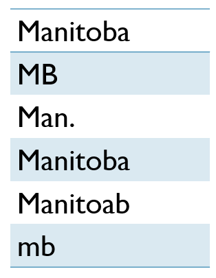

Intro to Data Cleaning with OpenRefine
Meg Miller - GIS & Data Visualization Librarian
slides: bit.ly/dataclean
Outline
- Software overview
- Data cleaning defined
- Benefits
- Hands-on Exercise
What is OpenRefine
In short:
Open tool
Runs in web browser
Can be as complicated as you want
For data cleaning
What is data cleaning
Improving the overall quality of your data.

Main categories:
Resolving inconsistencies
Formatting
Null values
Resolving Inconsistencies:

Variant spelling, inconsistent case, duplication...
Formatting:
Unit of measurement
Dates, text, numbers
Columns/ rows
Format migration
Benefits:
Efficient research
Easier conversion
Secondary use
Hands-on: Cleaning some messy data

Questions
meg.miller@umanitoba.ca
slides: bit.ly/dataclean